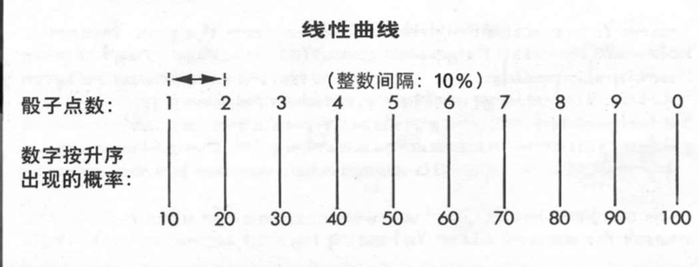
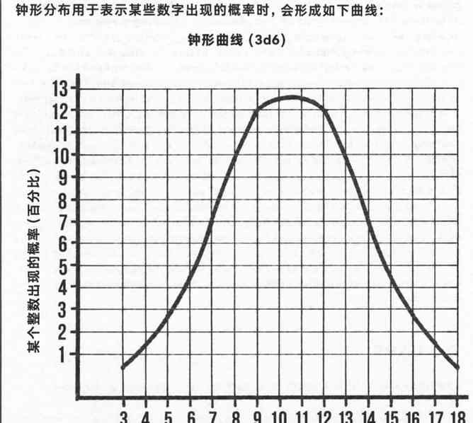
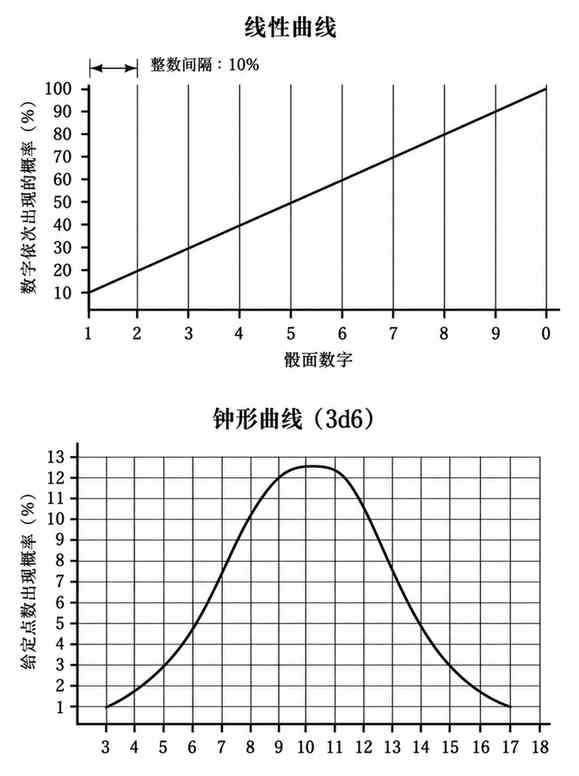

骰子 · Dice
作为地下城主，你的行当工具就是骰子——可以是柏拉图立体形状的骰子，也可以是几乎任何其他形状。你掷骰产生的随机数，将依据本书规定的概率，或你自行设定的概率，决定结果。
如果你不熟悉概率曲线，骰子大致会产生两种类型的分布：线性（直线）分布，即数字范围内每个整数出现的概率相同；钟形（先升后降）分布，即范围中间的数字比两端数字出现的概率更高。原书在此分别绘出线性曲线和 3d6 钟形曲线。



掷单颗骰子，或依次读取多颗骰子（例如分别把三颗骰子读作百位、十位和个位），会得到线性概率。将两颗或更多骰子的点数相加，则会形成钟形概率曲线。
在继续讨论前，先说明骰子的通用记法。骰子用字母 d 表示，其面数紧跟在字母后面。因此，六面骰记作 d6，八面骰记作 d8，依此类推。两颗四面骰写作 2d4，五颗八面骰写作 5d8。对骰子点数进行加减时，把修正值写在骰子表达式之后：d8 + 8 表示 9 至 16 的线性数字范围；3d6−2 则表示 1 至 16 的钟形分布，其中 8、9 最容易出现。后一种分布与 2d6 有相同的中位数，但范围两端更宽，出现中间数值的概率也高于 2d12。使用百分骰时，记作 d%。
d4 可以产生以 25% 为间隔的概率，也能随机给出 1 至 4；加 1 后则得到 2 至 5 的线性范围。若将掷出的 1 或 2 视为结果 1、3 或 4 视为结果 2，它还能生成 1 或 2；也可以配合其他骰子生成线性或钟形概率。例如，2d4 的结果范围为 2—8，3d4 为 3—12，d4 + d6 为 2—10，d4 + d20（按 d10 读取）为 2—14。
d4 还可以与另一颗骰子配合，生成该骰子两倍长度的线性数字范围：d4 掷出 1 或 2，就取另一颗骰子显示的数字；掷出 3 或 4，则在该数字上加上另一颗骰子的最大面值。因此，配合 d8 可得到 1—16，配合 d12 可得到 1—24。若使用 d20，结果可以是 1—20（假设使用标准的双重复 0—9 d20，且两组数字没有用颜色区分、标示其中一组加 10），也可以是 1—40（假设两组面以颜色区分）：d4 掷出 1 或 2 时加 0，掷出 3 或 4 时，依骰子类型加 10 或 20。
只需改变 d4 各点数代表的加值，就能得到更大的线性序列：1 始终代表加 0；2 可代表加上另一颗骰子的最大面值；3 代表加两倍最大面值；4 代表加三倍最大面值。因此，d4 与 d8 配合时，若 d4 掷出 4，就将 24 加到 d8 的点数上，得到 25—32 的范围。d6、d8、d12、d20 也能以类似方法使用。d6 的区间为 16 又 2/3%，d8 为 12.5%，d20 则可提供 10% 或 5% 的区间。d6 可用于生成 1—3 的随机数（1—2 视为 1，3—4 视为 2，5—6 视为 3）；d20 也很容易读出 1—5（1—2 视为 1，3—4 视为 2，5—6 视为 3，7—8 视为 4，9—0 视为 5）。
d20 经常被当作 d10 或 d20 使用。常见钟形概率范围从 2—20 到 5—50，也就是将 2、3、4 或 5 颗 d20 的点数相加。另一种常见读法是在结果后加一个十进位，从而得到 20—200、30—300 等范围。例如，一颗骰子掷出 3，另一颗掷出 0（按 10 读取），合计为 13，再增加一个十进位，结果就是 130。
有些地方可以买到非柏拉图立体形状的骰子。其中最常见的是标有 0—9 的十面骰。与 d20 一样，它可以有多种用途；若与另一颗骰子配合，还能替代 d20，生成以 5% 为间隔的概率曲线（1—20）。它也能像 d20 一样生成 0—9 的线性随机数。
还有一种骰子被称为“平均骰”。最常见的六面骰各面数字为 2、3、3、4、4、5。它所生成曲线的中位数仍为 3.5，与普通 d6 相同；但低端与高端的数字 2、5，出现概率只有 3、4 的一半。掷出两个较为平均的数字 3 或 4 的概率各为三分之一，因此非常接近平均值的结果会更常见。其他此类骰子可能包含 0、多个较低数字等。你也可以加入这类骰子、扑克骰、“输赢骰”（put & take）或其他任何骰子，以便更灵活地控制随机选择或事件判定的概率。
举例来说，作者有一颗 d6，六面分别是黑桃、梅花、梅花、方块、方块、红桃。遭遇中若队伍遇到一名态度不明的人物，就将这颗花色骰与 3d6 一同掷出。黑色花色代表厌恶，其中黑桃表示憎恨；红色花色代表好感，其中红桃表示极大的善意。3d6 则形成 3—18 的钟形曲线，9—12 是最常见的范围。黑桃 18 意味着绝对且不可改变的憎恨，红桃 18 则代表相反的极端。梅花或方块的结果可以通过交谈、奖赏等方式改变：例如，献上贡品或提供帮助，可能把梅花 12 改为梅花 3；赠送礼物则可能把梅花 3 改为方块 3。
上一节：进行 AD&D 游戏的方式 · Approaches to Playing AD&D
下一节：游戏中使用微缩模型 · Use of Miniature Figures With the Game